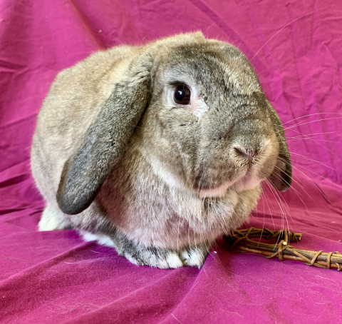

Kirby
Breed: Lop Mix
Sex: Male
Age: 6 Years, 1 Month
Weight: 6.4 Pounds
Bio
Hi, my name is Kirby and I'm a delightful bunny with a big attitude! I am bonded to Kerplunk and I'm the more
outgoing of the pair. Sometimes I like to steal greens from Kerplunk, but don't worry, she can hold her own and
steal them back! Our foster family loves watching us interact with each other, and laughing at our antics!
Kerplunk isn't as interested in being petted, but I like pets for a limited amount of time. I can also do some
champion flops if you watch me long enough. Work hard, play hard!
I can make myself fairly tall when I
periscope so some bunny proofing will be needed. If there is a way to escape my area, I will find it! Kerplunk and
I are fairly tidy though, outside of our litter box area. We like to kick the hay out sometimes and just eat it
next to the box... we definitely like an extra large box!
Want to Support Me?
To support me, or any of the sanctuary rabbits at the IHRS, please Donate to our GoFundMe if you are able.